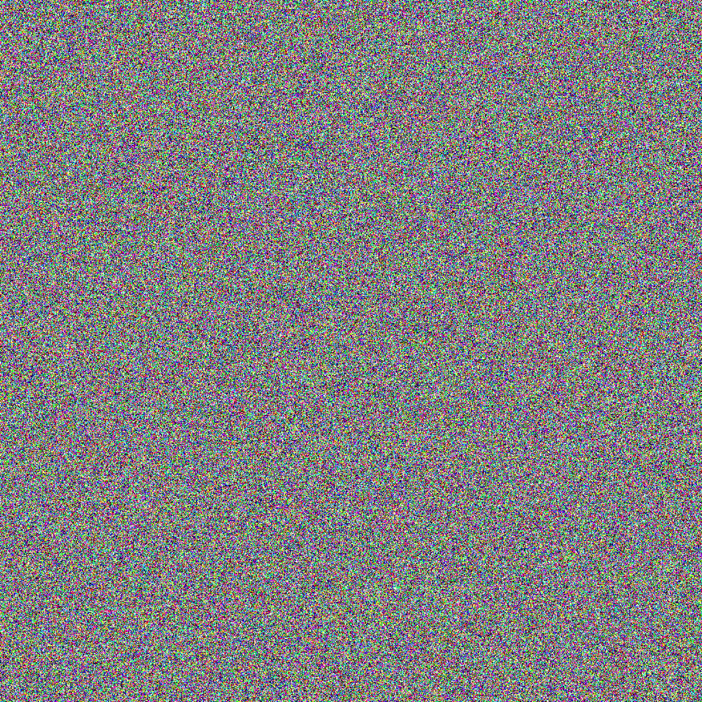

|
Alif Akbar Hafiz I am a rising sophomore computer science student at BINUS University. I am currently doing research at AIRDC & BDSRC working with Prof. Mahmud Isnan. I am an incoming visiting researcher at KU Leuven this spring, where I will be working with Prof. Lucca Guerts. My research revolves around enabling intelligent systems that can perceive, interpret, and adapt to the ever-changing physical world. Thus, I am particularly interested in self-supervised learning, 3D vision, and generative modelling as stepping stones towards this goal. Outside of research, I play badminton to de-stress, chess to procrastinate, and do a bit of design and creative coding for fun. Email / Linkedin / Google Scholar / Twitter / Github |

|
Publications |
|
 |
Still Cooking
Alif Akbar Hafiz , N + 1 Author , N + 2 Author , N + 3 Author , N + 4 Author Working on enabling active perception using Reinforcement Learning |